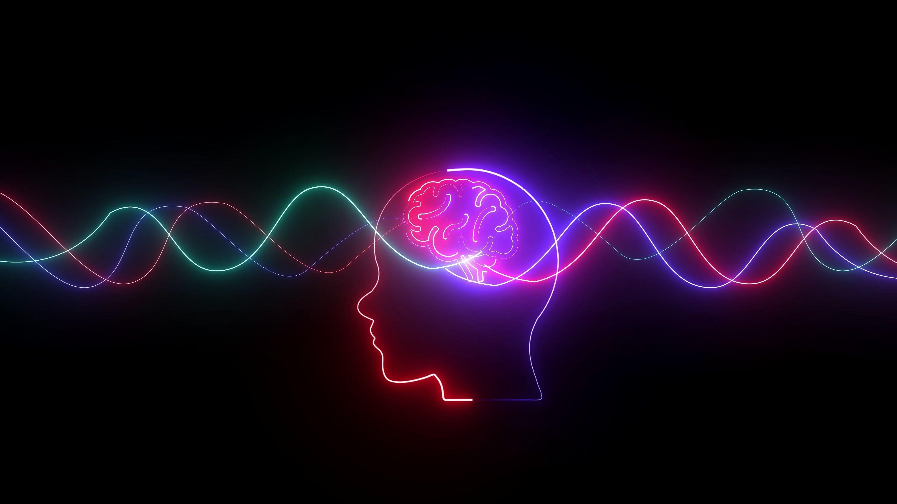

El Efecto Melodía comienza en lo más profundo de nuestra biología. Cuando escuchamos una canción que nos apasiona, el cerebro activa el sistema de recompensa y libera dopamina, la misma sustancia responsable del placer y la motivación. No es solo "entretenimiento"; es una descarga química que reduce los niveles de cortisol (la hormona del estrés) y genera un estado de bienestar inmediato. Entender esto permite usar la música como un regulador natural de nuestro estado de ánimo.